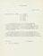

Hacker News: Front Page
フィード

Federal judge calls Flock 'indiscriminate mass surveillance'
Hacker News: Front Page
Article URL: https://techcrunch.com/2026/10/03/federal-judge-calls-flock-indiscriminate-mass-surveillance/Comments URL: https://news.ycombinator.com/item?id=49948254Points: 50# Comments: 22
43分前
Reasons I didn't become an EMT, ranked
Hacker News: Front Page
Article URL: https://ben.stolovitz.com/posts/reasons-not-emt-ranked/Comments URL: https://news.ycombinator.com/item?id=49947631Points: 26# Comments: 7
2時間前

Surely you have ultra-wideband radios on your bins too?
Hacker News: Front Page
Article URL: https://sjg.io/writing/binrange-have-you-actually-put-the-bins-out/Comments URL: https://news.ycombinator.com/item?id=49947472Points: 23# Comments: 6
2時間前

We want you to build the next Git platform on Cloudflare 1
1
Hacker News: Front Page
Article URL: https://blog.cloudflare.com/next-git-platform-on-cloudflare/Comments URL: https://news.ycombinator.com/item?id=49947051Points: 89# Comments: 76
3時間前
The work by Valve's Timur Kristóf on improving old AMD GPUs on Linux
Hacker News: Front Page
Article URL: https://www.phoronix.com/news/XDC-2026-Valve-Timur-AMDGPUComments URL: https://news.ycombinator.com/item?id=49946895Points: 36# Comments: 2
4時間前
RSS Feed Best Practices (2022) 11
Hacker News: Front Page
Article URL: https://kevincox.ca/2022/05/06/rss-feed-best-practices/Comments URL: https://news.ycombinator.com/item?id=49946845Points: 25# Comments: 7
4時間前
How to hack time, with C2PA
Hacker News: Front Page
Article URL: https://www.da.vidbuchanan.co.uk/blog/hacking-time.htmlComments URL: https://news.ycombinator.com/item?id=49946707Points: 8# Comments: 1
4時間前

Getting the most out of Opus 5.5 in Claude and Claude Code 22
Hacker News: Front Page
Article URL: https://claude.dev/blog/getting-the-most-out-of-opus-5-5/Comments URL: https://news.ycombinator.com/item?id=49946567Points: 117# Comments: 79
4時間前
What Meta got right with Muse
Hacker News: Front Page
Article URL: https://metedata.substack.com/p/what-meta-got-right-with-museComments URL: https://news.ycombinator.com/item?id=49946526Points: 10# Comments: 4
4時間前
Hole Punch: Sling your spaceship around gravitational fields
Hacker News: Front Page
Article URL: https://notoriousbfg.com/hole-punch/Comments URL: https://news.ycombinator.com/item?id=49946393Points: 172# Comments: 47
5時間前
Treachery in the Rodin Museum 3D scan verdict
Hacker News: Front Page
Article URL: https://cosmowenman.substack.com/p/rodin-museum-3d-scan-verdictComments URL: https://news.ycombinator.com/item?id=49946355Points: 16# Comments: 4
5時間前
LeCun has "zero concerns" about AI wiping out humanity, recent "rogue" incidents
Hacker News: Front Page
https://archive.ph/TyDPfComments URL: https://news.ycombinator.com/item?id=49946228Points: 30# Comments: 13
5時間前
Automating my 35mm film scanning pipeline
Hacker News: Front Page
Article URL: https://shannadige.com/blog/darkroom/Comments URL: https://news.ycombinator.com/item?id=49946148Points: 5# Comments: 2
5時間前
Vx – One Language, Every Chip
Hacker News: Front Page
Article URL: https://vxlang.org/Comments URL: https://news.ycombinator.com/item?id=49946076Points: 51# Comments: 28
5時間前
Agents don't need memory, they need documentation
Hacker News: Front Page
Article URL: https://liao.gg/blog/agents-dont-need-memoryComments URL: https://news.ycombinator.com/item?id=49945933Points: 14# Comments: 9
6時間前
RetailReady (YC W24) Is Hiring
Hacker News: Front Page
Article URL: https://www.ycombinator.com/companies/retailready/jobs/bFcgIe4-implementationsComments URL: https://news.ycombinator.com/item?id=49945904Points: 0# Comments: 0
6時間前
Docker has always used microVMs (well since 2016)
Hacker News: Front Page
Article URL: https://dave.recoil.org/docker-has-always-used-microvms/Comments URL: https://news.ycombinator.com/item?id=49945352Points: 9# Comments: 0
7時間前
Show HN: Factorio but with unreliable components
Hacker News: Front Page
Here's a micro-game you can try out in your browser, sort of a puzzle game about trying to use unreliable components to sort out increasingly more reliable components.Comments URL: https://news.ycombinator.com/item?id=49945058Points: 13# Comments: 2
7時間前
FTL: A new operating system for clouds 1
Hacker News: Front Page
https://github.com/nuta/ftlComments URL: https://news.ycombinator.com/item?id=49944912Points: 136# Comments: 57
8時間前

Watson Jr. memo about CDC 6600 (1963) 2
Hacker News: Front Page
Article URL: https://www.computerhistory.org/revolution/supercomputers/10/33/62Comments URL: https://news.ycombinator.com/item?id=49943685Points: 5# Comments: 3
10時間前